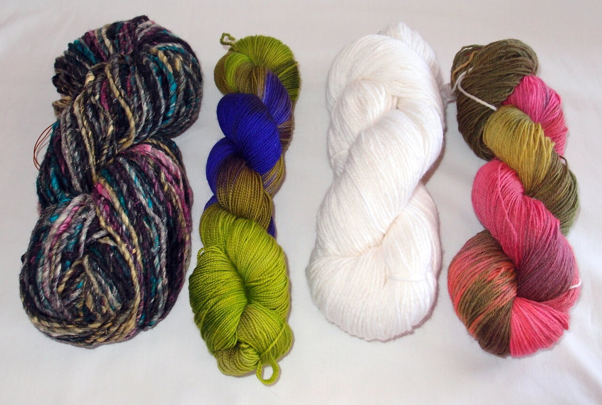
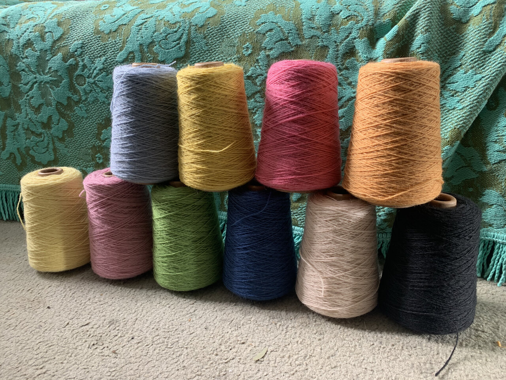
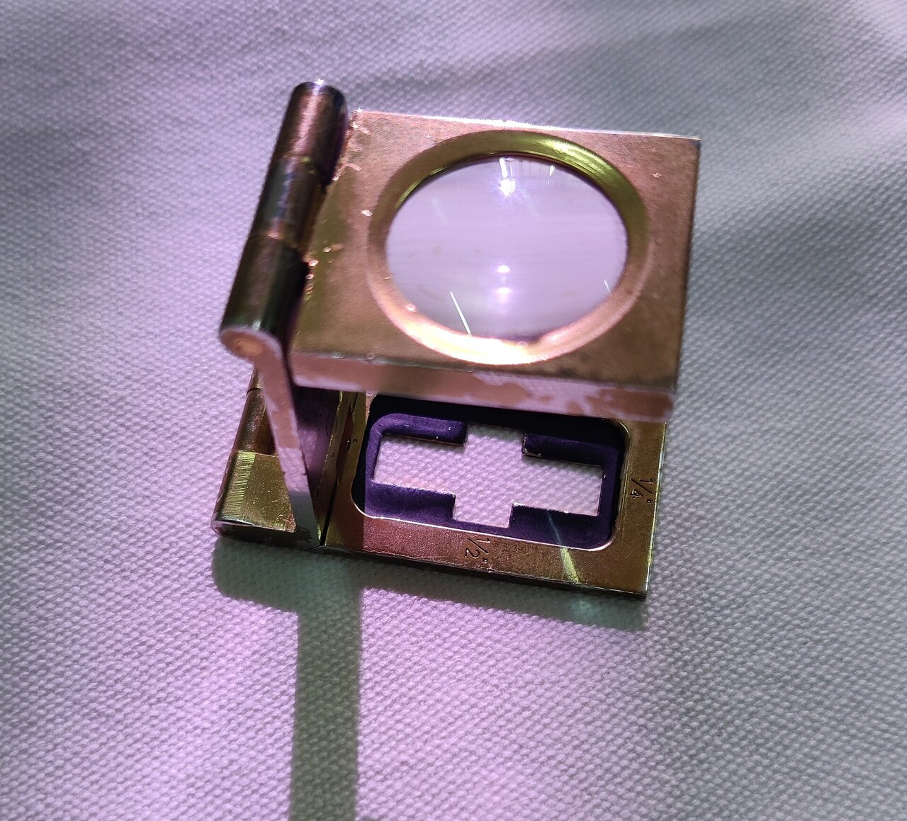
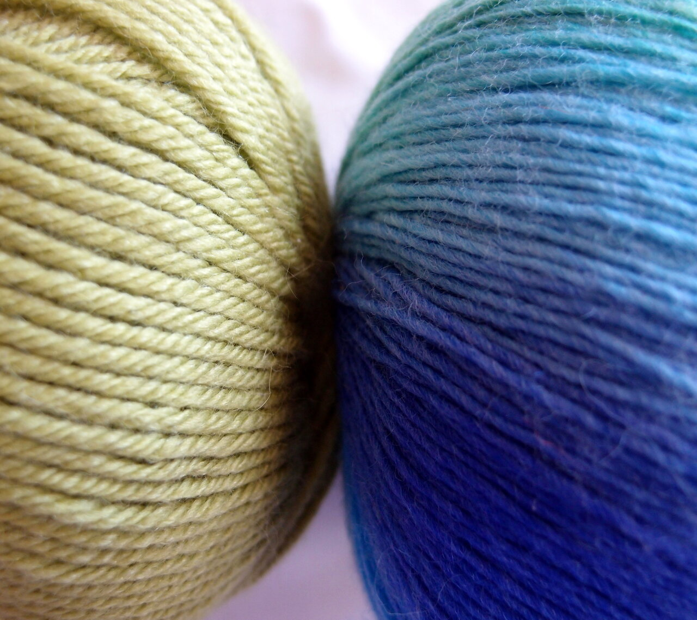

교육자료 · 번수
실 굵기를 숫자로 말하는 법. 면번수는 숫자 클수록 가늘다. 텍스·데니어는 숫자 클수록 굵다. 합격·규격은 작지·바이어를 본다.
같은 면번수(Ne) 줄에서 숫자만 다를 때, 실이 어떻게 달라 보이는지 먼저 본다.


작지·발주에 Ne 30, P150D, Tex 20이 섞여 온다. 어떤 말인지 먼저 가른다.
방적은 링·OE·MVS처럼 “어떻게 뽑는지”. 이 페이지는 굵기 숫자 읽는 법.
이 페이지 숫자로 공장 규격을 정하지 않는다. 작지·바이어 스펙을 본다.
숫자 방향이 서로 반대인 두 갈래가 있다. 단위를 빼고 숫자만 보면 틀린다.
번수 두 갈래: Ne·Nm은 숫자가 클수록 가늘다(무게 고정, 길이를 잼). Tex·Denier·dtex는 숫자가 클수록 굵다(길이 고정, 무게를 잼).
면 실에서 많이 씀.
현장 말: 면번수, 미터번수.
이름: Ne · Nm
길이당 무게로 셈.
현장 말: 텍스, 데니어.
이름: Tex · Denier · dtex
같은 “30”이라도 Ne 30과 Tex 30은 완전히 다르다. 단위를 함께 읽는다.
| 쉬운 말 | 현장 말 | 한 줄 뜻 |
|---|---|---|
| 숫자↑ = 가늘 | 면번수 (Ne) | 1 lb에 840 yd 타래가 몇 개 |
| 숫자↑ = 가늘 | 미터번수 (Nm) | 1 kg에 1000 m 타래가 몇 개 |
| 숫자↑ = 굵음 | 텍스 (Tex) | 1000 m당 몇 g |
| 숫자↑ = 굵음 | 데니어 (Denier) | 9000 m당 몇 g. 필라멘트에 많음 |
| 숫자↑ = 굵음 | 디텍스 (dtex) | 10000 m당 몇 g. Tex×10 |
번수를 세는 방법은 두 가지다. 무게를 정해 두고 길이를 재거나, 길이를 정해 두고 무게를 잰다. 이 차이 때문에 숫자 방향이 반대가 된다.
정한 무게에 실이 몇 단위 길이만큼 나오는지 센다. 길이가 길수록 숫자가 크다. 그래서 숫자가 클수록 가는 실이다.
면·모 같은 방적사(짧은 섬유를 꼬아 만든 실)에 쓴다. 폴리·나일론도 방적사라면 이 방식으로 적는다.
정한 길이의 실이 몇 g인지 잰다. 무거울수록 숫자가 크다. 그래서 숫자가 클수록 굵은 실이다.
폴리·나일론 같은 필라멘트(길게 이어진 실)에 많이 쓴다.
1 lb(파운드, 약 454 g) 실이 840 yd(야드)면 1수다.
같은 1 lb가 1,680 yd(840 × 2)면 2수다.
같은 1 lb가 2,520 yd(840 × 3)면 3수다.
30수는 1 lb에 25,200 yd(840 × 30)다. 같은 무게로 더 길게 뽑았으니 더 가는 실이다.
보기 가운데 7수가 가장 굵고, 40수 쪽으로 갈수록 가늘다. 굵은 실은 태사, 가는 실은 세사라고도 부른다.
모사는 1,000 g(1 kg)에 1,000 m가 몇 개 나오는지로 센다(Nm). 이것도 숫자가 클수록 가늘다.
양복 원단에 붙는 120’s, 140’s는 실 번수가 아니다. 양모 섬유 한 올이 얼마나 가는지 나타내는 등급이다. 숫자가 클수록 섬유가 가늘고 부드럽다.
9,000 m 실이 1 g이면 1 데니어다. 2 g이면 2 데니어다. 같은 소재일 때, 같은 길이에서 무게가 두 배라 더 굵은 실이다. 다만 지름(두께)은 두 배가 아니라 약 1.4배(√2배)다. 무게는 실 단면의 넓이를 따라가기 때문이다.
같은 파운드 기준이라도 소모사(빗질한 양모 실)는 1 lb에 560 yd, 마사(린넨 실)는 1 lb에 300 yd가 1수다. 이 둘은 영국식 소모번수(NeK)·마번수(Lea)다. 현장에서 모사는 보통 미터번수(Nm)로 적는다. 그래서 같은 “30수”라도 면·소모·마 실 굵기가 서로 다르다. 바꿀 때는 아래 환산표를 쓴다.
출처 예: 공개 스레드·텍스타일 스쿨 환산. 대략치. 계약 환산표가 있으면 그쪽.
| 바꿔 읽기 | 식 | 쉬운 메모 |
|---|---|---|
| 텍스 ↔ 면번수 | Tex ≈ 590.5 / Ne | 면번수 클수록 텍스 작음 |
| 데니어 ↔ 텍스 | Denier = 9 × Tex | 길이당 무게 계열 |
| 디텍스 ↔ 텍스 | dtex = 10 × Tex | 필라멘트 표기 많음 |
| 미터번수 ↔ 면번수 | Nm ≈ 1.693 × Ne | 둘 다 “클수록 가늘” |
면번수 Ne 30이면 Tex ≈ 590.5 ÷ 30 ≈ 19.7.
데니어로 바꾸면 9 × 19.7 ≈ 177.
“Ne 30은 꽤 가는 면 실”로 읽으면 된다. 공장 기준으로 쓰지 않는다.
왼쪽 칸의 번수 숫자(n)를 알 때, 위쪽 방식으로 바꾸는 식이다. 공개 환산 계수다. 소수점 아래는 반올림한 값이다.
| 아는 번수 ↓ / 바꿀 번수 → | 미터번수 Nm | 면번수 Ne | 소모번수 (梳毛) | 마번수 (麻) | 데니어 D | 텍스 Tex |
|---|---|---|---|---|---|---|
| 기준 (무게·길이) | 1 kg에 1,000 m | 1 lb에 840 yd | 1 lb에 560 yd | 1 lb에 300 yd | 9,000 m에 1 g | 1,000 m에 1 g |
| 미터번수 n | - | 0.591 × n | 0.886 × n | 1.654 × n | 9,000 ÷ n | 1,000 ÷ n |
| 면번수 n | 1.693 × n | - | 1.5 × n | 2.8 × n | 5,315 ÷ n | 590.5 ÷ n |
| 소모번수 n | 1.129 × n | 0.667 × n | - | 1.867 × n | 7,972 ÷ n | 885.8 ÷ n |
| 마번수 n | 0.605 × n | 0.357 × n | 0.536 × n | - | 14,882 ÷ n | 1,654 ÷ n |
| 데니어 d | 9,000 ÷ d | 5,315 ÷ d | 7,972 ÷ d | 14,882 ÷ d | - | 0.111 × d |
| 텍스 t | 1,000 ÷ t | 590.5 ÷ t | 885.8 ÷ t | 1,654 ÷ t | 9 × t | - |
곱하기(×) 칸은 같은 방향끼리다(둘 다 클수록 가늘다). 나누기(÷) 칸은 방향이 반대다(한쪽은 클수록 가늘고, 다른 쪽은 클수록 굵다).
| 표기(예) | 대략 | 쓰임(공개·작지 예) |
|---|---|---|
| Ne 20 | ~29.5 tex | 헤비 저지 / 플리스 |
| Ne 26 | ~22.7 tex | 바디 공개 예 |
| Ne 30 | ~19.7 tex | 가는 코마 예 |
| Ne 40 | ~14.8 tex | 여름 컴팩트 예 |
| P150D | ~167 dtex | 필라멘트 굵기 말. Ne랑 다른 줄 |
표의 Ne 값은 공개·작지에서 자주 보는 예다. 공장 Ne 기준을 규칙으로 단정하지 않는다. P150D는 필라멘트 굵기를 나타내는 말이라 Ne와는 다른 단위다. 뽑는 길은 방적 페이지.
우븐 원단 스펙에는 실 굵기와 밀도가 함께 적힌다. 아래 예로 읽는 순서를 본다.
앞쪽은 날실(경사, 세로 실)이고 뒤쪽은 씨실(위사, 가로 실)이다.
N 70D FD = 나일론 70 데니어 필라멘트 한 가닥. FD는 광택을 죽인 실(풀덜, full dull)을 뜻한다.
140 × 85 = 1인치 안에 날실 140올, 씨실 85올.
둘을 더하면 225다. 이 합을 밀도(T)라고 부르고, 현장에서는 비슷한 값으로 묶어 230T처럼 부르기도 한다.

나일론·면 혼방(N/C)이나 면(C) 원단에는 면번수가 붙는다. 10수, 20수, 30수, 40수 같은 표기를 자주 본다. 어떤 번수를 쓸지는 작지를 본다.
나일론·폴리라도 잘라서 꼰 방적사(스펀사)는 데니어 대신 면번수(’S)로 적는다. 같은 섬유라도 실 종류에 따라 단위가 바뀐다.
실은 처음에 한 가닥(단사)으로 뽑는다. 더 질기고 고르게 하려고 두 가닥을 다시 꼬기도 한다. 이것을 합사(2합)라고 한다.
합사: 같은 굵기 단사 두 가닥을 꼬아 한 가닥으로 만든 실. 합치면 굵어진다(예: 30/2). 실물 비교는 아래 사진을 본다.

뒤의 1은 한 가닥이라는 뜻이다. 티셔츠 원단 실은 대부분 이렇게 적는다.
30수 두 가닥을 꼬았다. 굵기는 약 15수와 같다. 면번수는 무게를 고정하고 길이를 세는 방식이라, 합사하면 같은 무게에 길이가 반이 되어 숫자를 가닥 수로 나눈다. 데니어·텍스는 반대로 더한다. 예: 20 tex 두 가닥은 약 40 tex이고, 텍스에서는 결과 굵기를 앞에 적어 R40 tex/2처럼 쓰기도 한다. 꼬면서 실 길이가 조금 줄어 실제로는 약간 더 무겁다.
면 실에서는 2/30과 30/2 모두 보통 “30수 두 가닥”이다. 지역·회사마다 숫자 순서만 다르다. 텍스에서는 R40 tex/2처럼 결과 굵기를 앞에 적기도 한다. 어느 뜻인지 작지·거래처에 글로 확인한다.
같은 조직·같은 편직 조건이면 가는 실(숫자 큰 번수)일수록 원단이 얇고 가볍다. 원단 무게는 1 m²당 g(g/m²)으로 본다. 무게는 번수만이 아니라 조직·밀도·가공으로도 바뀐다.
참고: 합사와 번수 표기 · 번수 체계 기술 자료 · 실 구성 표기 규격 요약 · 섬유 단위(위키백과 영문)
| 현장 말 | 쉬운 말 | 주의 |
|---|---|---|
| 면번수 / Ne | 숫자 클수록 가늘 | 면 실에서 많음 |
| 미터번수 / Nm | 숫자 클수록 가늘 | 미터법 |
| 텍스 / Tex | 숫자 클수록 굵음 | g/1000 m |
| 데니어 / D | 숫자 클수록 굵음 | P150D = 150 데니어급 |
| 디텍스 / dtex | 숫자 클수록 굵음 | Tex×10. Ne와 섞지 않는다 |
교육용 영상은 이 페이지에 아직 없다.
이 페이지 숫자로 공장 규격을 정하지 않는다. 작지·바이어 스펙을 본다.
교육용 영상은 이 페이지에 아직 없다. 숫자 체계만 이 페이지에서 익히고, 뽑는 방법은 방적으로 간다.
면번수는 숫자 클수록 가늘다. 텍스·데니어는 클수록 굵다.
Tex = g/1000 m. Denier = g/9000 m. Ne = 840 yd hank/lb.
Tex ≈ 590.5 / Ne. Denier = 9×Tex. Nm ≈ 1.693×Ne.
P150D ≈ 150 denier급(~167 dtex). 면번수와 헷갈리면 안 된다.
둘 다 길이당 무게. Denier = 9×Tex. dtex = 10×Tex.
../방적/ 은 링·OE·MVS. 이 페이지는 숫자 체계.
작지·바이어. 이 페이지 예로 공장 Ne 기준을 정하지 않는다.
Nm ≈ 1.693 × Ne (공개 환산).
840 yd가 1수. 2,520 ÷ 840 = 3. 30수는 25,200 yd다.
같은 길이에서 무거우면 굵다. 면번수는 반대로 무게를 고정한다(항중식).
1인치 안의 날실 140 + 씨실 85 = 225. 현장에서 230T처럼 묶어 부르기도 한다.
면번수는 가닥 수로 나눈다. 30 ÷ 2 = 15. 표기 순서는 작지로 확인한다.